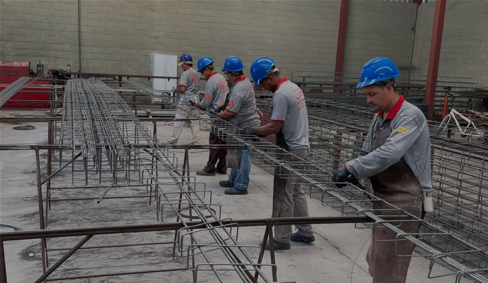
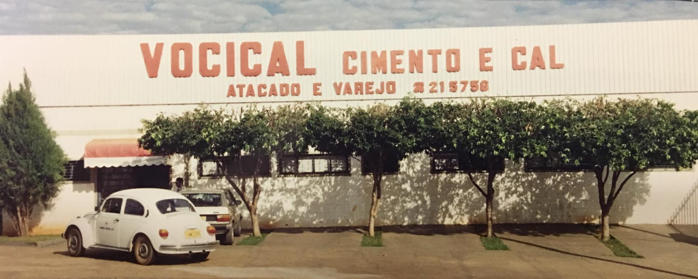
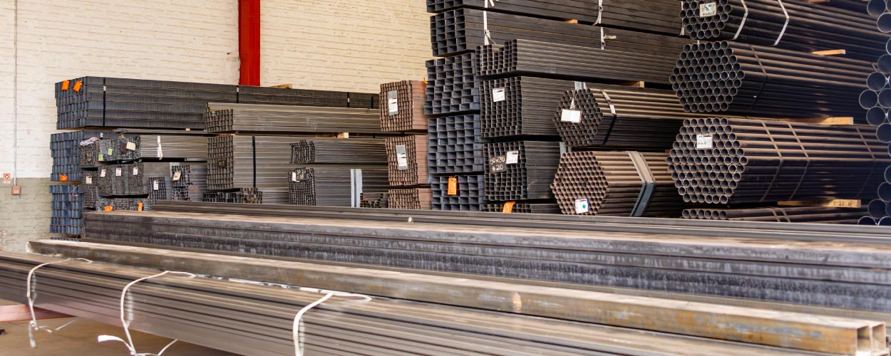
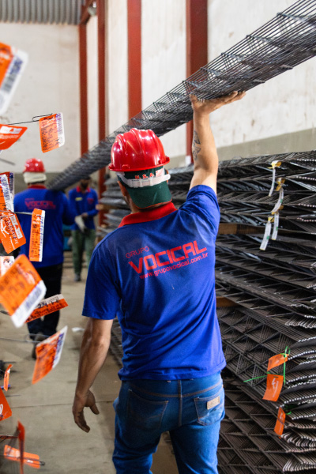

Corte e dobra de vergalhão e aço
Pilares, colunas, telas, sapatas, treliças, vigas e estribos conforme o projeto, prontos para a obra.
Distribuição de materiais de construção, aço, drywall e coberturas para lojas, construtoras, serralherias e indústrias. 11 unidades em São Paulo e Mato Grosso, com corte e dobra e frota própria.

O Grupo Vocical distribui produtos e soluções para construção civil e indústrias desde 1987. São 11 unidades em São Paulo e Mato Grosso atendendo diversos estados, com um mix completo de materiais de construção, aço, estruturais, coberturas, drywall e agronegócio.
Atendemos lojas de material de construção, construtoras, incorporadoras, serralherias, calheiros, gesseiros e indústrias com foco em disponibilidade, prazo e atendimento consultivo.
Nossa históriaCada marca atende sua região com o mix que faz a obra andar. Escolha a unidade mais perto de você.
Seis categorias que cobrem da fundação ao acabamento. A disponibilidade pode variar por unidade.

Pilares, colunas, telas, sapatas, treliças, vigas e estribos conforme o projeto, prontos para a obra.

Chapas, calhas e telhas onduladas ou trapezoidais cortadas sob medida para cada aplicação.

Entrega com previsibilidade para manter o abastecimento regular do seu canteiro.
Encontre a unidade mais próxima e fale direto com o time de vendas.
Fale com o time do Grupo Vocical e receba atendimento consultivo e resposta ágil.
Fale Conosco